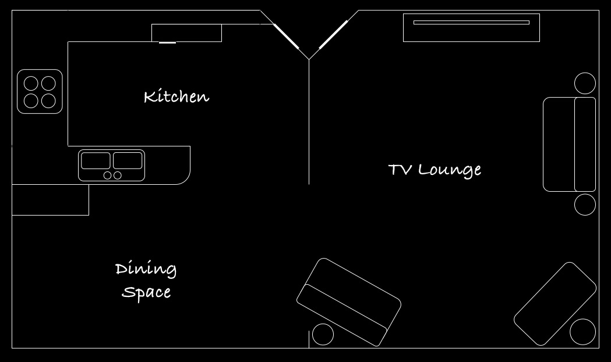
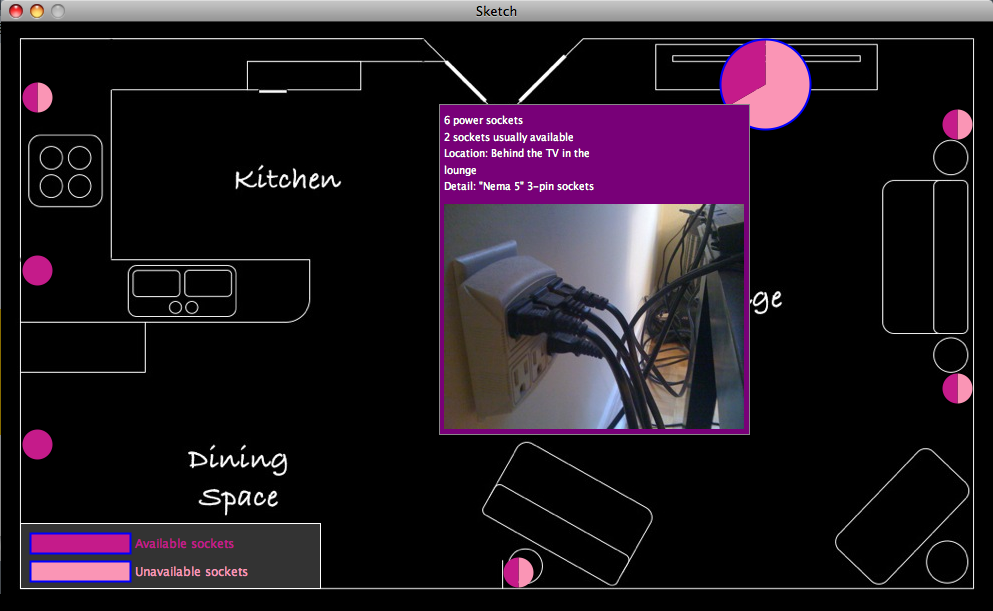

Part 1: The Place (5 points)
Whenever I'm in my house, I find myself scrounging around for power
sockets. I'm kind of new to the house, so I'm also curious to grasp the
whole landscape once and for all. So I visualized the majority portion
of my house's ground floor--the lounge, kitchen and dining space. The
visualization helps enable the following tasks, in question form:
- Where is the closest power socket?
- What does it look like?
- How many power sockets are available at a point?
- Any tip on locating the power socket (e.g. behind a couch)?
- Any detailed information on the socket (e.g. NEMA5 standard 3-pin)?
Part 2: Data Collection (15 points)
I created a map from scratch using PowerPoint. I intended to keep
the design very basic and simple:
The data for each socket port contains the following:
- Self-prescribed ID (used only behind the scenes),
e.g. L1 for lounge's 1st going clockwise from the top -- nominal
- Location on the map (x- and y-coordinates) -- quantitative
- Total number of sockets -- quantitative
- Number of usually available sockets (I took one
sample based on an arbitrary state of the area) -- quantitative
- Socket description, e.g. "Behind
the TV in the lounge" -- nominal
- Location tip, e.g. "To the left of the stove" -- nominal
I collected 8 sockets' information and created housenames.tsv
to store this information (ordered as above):
L1 6 2 "Nema 5" 3-pin sockets Behind the TV in the lounge
L2 2 1 "Nema 5" 3-pin sockets Behind the lamp to the left of the white couch in the lounge. One socket taken by lamp.
L3 2 1 'Nema 5' 3-pin sockets Behind the lamp to the right of the white couch in the lounge. One socket taken by lamp.
L4 2 1 'Nema 5' 3-pin sockets Behind the red sofa in the lounge. One socket taken by tall lamp.
L5 2 2 'Nema 5' 3-pin sockets Below the big fancy mirror in the lounge
K1 2 2 'Nema 5' 3-pin sockets In the kitchen dining space
K2 2 2 'Nema 5' 3-pin sockets To the left of the stove
K3 2 1 'Nema 5' 3-pin sockets To the right of the stove. One socket taken by microwave. Other is sometimes shared between the two toasters.
Part 3: Registering the Locations to Your Map (20 points)
Using Ben Fry's map mouse-location tool, I obtained the coordinates of each socket port in the file locations.tsv:L1 764 62
L2 956 102
L3 956 366
L4 517 550
L5 518 227
K1 36 422
K2 36 248
K3 36 75
The first column is the ID of the socket port and the second and third columns are the X and Y coordinates of the socket port on the map. I had to make some changes to the original source, but nothing major. To ensure alignment accuracy, this file was hand-tweaked for the processing visualization sketch.
Part 4: Tell Your Story (50 points)
Source code: Sketch Legend Settings Socket Table
Encoding
- Location on the map: x- and
y- position
- Total number of sockets: size
(of circle)
- Number of sockets for an availability type (usually
available/notavailable): area and
angle (of arc)
- Availability: color
- Socket description: text
label
- Location tip: text label
The encodings above were chosen based on the best-known encodings for the corresponding data type (nominal, ordinal, quantitative). Position is the best encoding for all data types. Angle and area are in the top 5 best encodings for quantitative data. Hue is the best next available encoding for the sockets' availability type. The Color Brewer was used to obtain a 2-class color scheme, even though the data is nominal. I used pink/purple on black because it achieves a pop-out effect and also gives a "wired" touch to the visualization.
Interaction
The visualization makes use of linked highlighting with the legend,
as well as context-sensitive detail on mouse over. For e.g.:

Implementation
The domain model for the visualization is essentially composed of
the Socket class,
which encapsulates the following:
public class Socket {
private Settings settings; private String id, socketDescription, locationDescription; private int centerX, centerY, totalSockets, availableSockets; private boolean isHighlighted;
...
}
A Socket also knows
exactly how to draw itself, so it's also used as a presentation class.
Other presentation classes that know how to draw themselves are Legend and LegendItem. The Settings class is
where commonly used constants and display configurations are maintained.
Thanks to a solid OO design, the drawing logic in Sketch (the program
entry point) is quite simple:
void draw()
{
smooth();
image(mapImage, 0, 0);
legend.draw();
for(int i = 0; i < sockets.length; i++)
sockets[i].draw();
//for highest z-index, draw tooltips last
for(int i = 0; i < sockets.length; i++)
if(sockets[i].isMouseOver())
sockets[i].drawToolTip();
}
Findings
For one, it was good to know that all socket ports in the area have at least one socket always available. I didn't think that was the case before this HW.
Both the kitchen + dining space and the TV lounge have an equal number of available sockets--coincidental symmetry?
If you want more than 2 sockets at one point, the three options are 1) behind the TV, 2) in the dining space and 3) to the left of the stove.